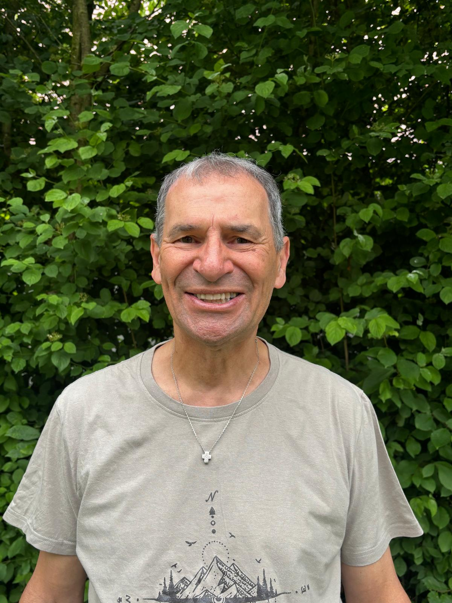

Wer wir sind
Entwickelt wurde  innerhalb der
Katholischen Charismatischen Erneuerung
.
5ive will Räume schaffen, um miteinander ins Gespräch zu kommen, und basiert dabei weder auf einer
spezifisch katholischen noch einer spezifisch „charismatischen" Theologie. Der Kurs versteht sich
als „work in progress" und wird kontinuierlich weiterentwickelt.
innerhalb der
Katholischen Charismatischen Erneuerung
.
5ive will Räume schaffen, um miteinander ins Gespräch zu kommen, und basiert dabei weder auf einer
spezifisch katholischen noch einer spezifisch „charismatischen" Theologie. Der Kurs versteht sich
als „work in progress" und wird kontinuierlich weiterentwickelt.
Wir sind eine Arbeitsgruppe aus allen Teilen Deutschlands und leben zwischen Dresden, Hannover, Frankfurt und dem Nördlinger Ries. Wir kommen aus der Großstadt, der Kleinstadt und vom Dorf. Unsere regionalen Lebenswelten unterscheiden sich sehr voneinander – was uns verbindet, ist die Suche nach einem kreativen Format, um mit den Menschen in unserer Nachbarschaft über die wirklich wichtigen Dinge im Leben ins Gespräch zu kommen …
Kontakt

Karl Fischer
Nördlingen
Bring 5ive an deinen Ort.
Schreib Barbara an oder füll das Formular aus – wir melden uns schnell und persönlich.